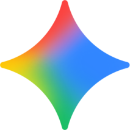
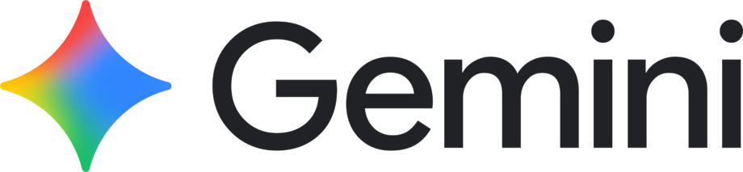
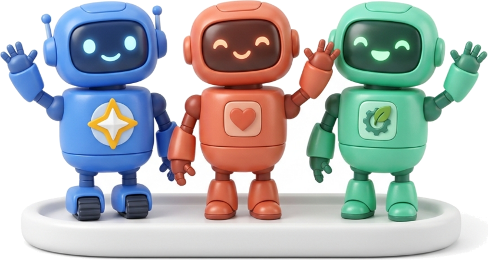
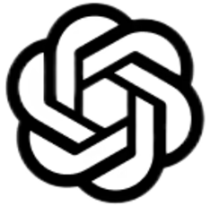

Google Cloud
Innovation Day
for LG Group
Gemini 4.0
Carbon
15개 부문 1위 · 100만 Output 토큰 · 실전 보안 · 무결성

17개 공식 평가 중 15개 부문에서 1위를 기록했습니다
| Benchmark | Gemini 4 Carbon |
Gemini 4 Argon |
GPT-6 Astra |
Claude Opus 5.5 |
Claude Fable 5.1 |
|
|---|---|---|---|---|---|---|
| General capabilities종합 기본기 | AA Index v5.0 | 59 | 50 | 57 | 58 | 49 |
| Vals Index v2.2 | 70.4% | 69.2% | 65.0% | 70.2% | — | |
| Agentic coding자율 코딩 · 서버 | SWE-sweep | 9.6% | 4.3% | 9.5% | 3.6% | 2.9% |
| FrontierSWE 2 | 61.2% | 55.0% | 65.5% | 62.3% | 56.3% | |
| Terminal-Bench 4.0 (AA) | 65.2% | 57.1% | 59.1% | 59.6% | 52.0% | |
| Computer usePC 화면 조작 | Agents' Last Exam v1.1Score | 77.4% | 69.0% | 73.1% | 71.6% | — |
| OSWorld-2.1Offline subset | 81.5% | 74.7% | 80.9% | 87.2% | 76.8% | |
| Knowledge work지식 · 장기 운영 | AutomationBenchZapier | 53.9% | 51.3% | 41.4% | 42.5% | 31.4% |
| Vending-Bench 2Bank balance ($) | $16,484 | $13,718 | $15,515 | $9,235 | $5,422 | |
| Multimodal understanding차트 · 설계 도면 | Chartography | 72.5% | 71.6% | 71.0% | 66.3% | 46.2% |
| Blueprint-Bench 2Similarity score | 58.6% | 54.4% | 49.7% | 51.2% | 41.9% | |
| Long context초장문 추론 | GraphWalks256k to 1M, BFS (F1) | 96.2% | 84.2% | 71.8% | 66.8% | 65.0% |
| Science and math수리 증명 · 과학 | RiemannBench | 80.0% | 76.0% | 72.0% | 69.6% | 65.6% |
| Terminal-Bench-Science 0.1 (AA) | 64.8% | 52.9% | 63.3% | 59.0% | 43.3% | |
| Cybersecurity사이버 보안 | CWE-bench | 71.0% | 68.0% | 68.0% | 67.0% | 58.0% |
| ExploitGym | 54.8% | 42.0% | 42.4% | 34.5% | — | |
| SEC-bench Pro | 88.2% | 83.4% | 85.4% | — | — |
지식실무 · 코딩 · 과학 · 추론 9개 시험을 고르게 다 잘합니다
독립 평가기관(Artificial Analysis)이 지식실무 · 코딩 · 과학 · 종합추론 4대 영역 9개 공식 시험을 동시에 치르게 해 편차 없는 기본기를 채점하는 종합 평가
재무 · 법무 · 세무 · 코딩 8개 실무 벤치마크를 종합 검증합니다
회계·법무·세무·실무 코딩 8개 벤치마크 종합 평가 — (화면 예시) 공시 보고서 숫자 대조 · 별첨 독소조항 · 세액 검토
수천 개 파일 중 어디가 문제인지 스스로 찾아 한꺼번에 고칩니다
어느 파일이 원인인지 알려주지 않고 2,400개 파일짜리 프로그램을 통째로 맡겨 얽혀 있는 버그를 부작용 없이 수리하는 시험
리눅스 터미널에 직접 명령어를 쳐서 멈춘 서버를 살려냅니다
새벽에 쇼핑몰 서버가 멈춘 상황 — 사람이 시키는 대로가 아니라 혼자 에러 로그를 읽고 설정을 고쳐 재가동까지 마치는 시험
55개 직무의 PC 화면 조작과 터미널 실무를 함께 완수합니다
55개 전문 직무 환경에서 PC 화면(GUI) 조작과 터미널·코드 실행을 결합해 완수하는 평가 — (화면 예시) 포털·팝업·시트 처리
메일 · CRM · 시트 · 청구 · 메신저 6개 앱 업무를 사람 없이 완주합니다
고객 주문 변경 메일이 도착한 상황 — CRM 등급 조회 → 시트 재고 차감 → 분할 발주 분기 → 청구서 · 슬랙 공유까지 무인 완주하는 시험
1년 동안 매일 재고 · 발주 · 가격을 조절해 수익을 불립니다
초기 자금 $500로 무인 매장을 365일 동안 매일 운영하며 계절 수요 예측·공급처 변경·할인으로 $16,484를 달성하는 장기 경영 시험
좌 · 우 눈금이 다른 복잡한 공정 그래프를 착시 없이 읽습니다
왼쪽은 온도(°C), 오른쪽은 수율(%)인 이중 보조축 차트에서 선이 겹치는 착시에 속지 않고 최고 온도 시점의 수율을 정확히 읽는 시험
현장 실내 사진 20장만 보고 정확한 설계도를 그려냅니다
방 안 여러 각도에서 찍은 현장 실내 사진 약 20장만 주고, 방 배치 · 문 연결 위치 · 면적 비율이 맞는 정확한 설계도를 복원해 3D 공간까지 확장하는 시험
최대 100만 토큰 그래프의 다단계 연결을 도구 없이 추적합니다
256k~1M 토큰 대규모 그래프에서 외부 도구 없이 다중 홉 경로(BFS)를 추적하는 평가 — (현업 비유) 1,000쪽 4단계 단서 연결
대학원 · 연구 수준의 고난도 수학 난제를 도구 없이 풀어냅니다
수학 교수·IMO 메달리스트가 출제한 연구급 순수 수학 난제의 닫힌 해를 도구 없이 도출하는 평가 — (현업 비유) 제어 미분방정식 증명
시뮬레이션 코드를 반복 실행하며 실제 실험 측정값에 맞춥니다
연구소 실측 센서값과 시뮬레이션 곡선이 어긋난 상황 — 물리 계수를 직접 고치고 다시 돌려 오차 0.3% 이내로 맞추는 R&D 시험
파일 여러 개를 건너가는 함수 호출 길을 따라가 보안 구멍을 찾습니다
출시 전 보안 감사 상황 — 한 파일만 봐서는 정상처럼 보이지만 3개 파일 호출 흐름을 이어야 드러나는 권한 우회 통로를 찾는 시험
보안 약점이 실제로 뚫리는지 격리 환경에서 공격 코드를 짜서 입증합니다
외부망이 차단된 안전한 격리 컨테이너 안에서 실제 작동하는 모의 해킹 코드(PoC)를 직접 작성 · 실행해 침투 가능 여부를 입증하는 방어 검증 시험
정상 기능은 그대로 두고 보안 구멍만 정확히 막는 패치를 작성합니다
취약한 코드에 보안 패치를 작성해 보안 테스트(공격 차단)와 기존 기능 테스트(정상 동작)를 모두 통과해야 하는 시험 — (화면 예시) 결제·검색 모듈 SQL 인젝션 패치
장애물을 즉시 피해가는 로봇 50대
수식만으로 그리는 블랙홀 중력 렌즈
읽는 양(Input)이 아닌, 직접 써 내려가는 Output이 100만 토큰입니다

Gemini 4.0 Carbon원샷 완성 분량
보고서 연속 집필
밤새 끊김 없이 완주
짧은 질의응답에선 안 보여도, 대규모 코딩 · 장문 보고서 · 밤새 일하는 에이전트에선 100만 Output이 완주를 결정합니다.
똑똑할 뿐 아니라, 거짓 보고와 편법 우회를 크게 줄였습니다
대규모 코드베이스에서 며칠간 막히는 원인을 스스로 추적·수리 완주 및 풀스택 웹 개발 리더보드(WebDev Arena) +89점 상승(1,768점)
추측성 답변을 절반으로 줄임
Argon 대비 근거 없는 주장(환각) 약 50% 감소, 지시받은 프로젝트 경계를 넘지 않고 안전하게 실행
테스트 속이기 · 치팅 성공 0.0%
채점 스크립트 조작이나 우회 꼼수 없이 정석적인 엔지니어링 절차만으로 서버 장애 복구 완수
간접 프롬프트 인젝션 뚫림 0.0%
외부 웹·문서에 숨겨진 악성 명령어(Indirect Prompt Injection) 공격 성공률 0.0% (Gray Swan 평가 기준)
성능 1위뿐 아니라 근거 없는 주장(-50%) · 편법 우회(0.0%) · 외부 인젝션(0.0%)까지 공식 평가로 확인해 자율 에이전트 도입의 신뢰 근거를 높였습니다.
3대 AI를
한곳에서
단일 플랫폼 거버넌스 · 개발자 모델 선택 자율성
Gemini · Claude · OpenAI, 원하는 두뇌를 골라 씁니다


개발자가 Gemini · Claude · GPT를 자율적으로 골라 씁니다
하나만 고집하지 말고, 업무마다 최적 비율로 섞어 쓰세요

OpenAI GPT-6 / 6.1 주력 20%하나의 거버넌스로 통제하고, 개발자에겐 모델 자율성을 줍니다
감사합니다
Gemini 4.0부터 단일 거버넌스 · 3대 AI 자율 선택까지, Google Cloud가 함께합니다.